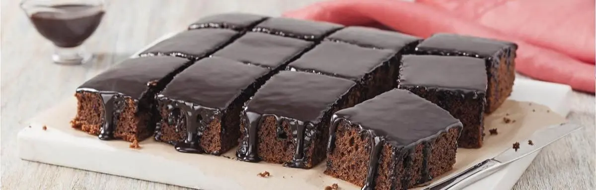

Receita para Bolo de Chocolate
Receita simples e pratica do bolo mais querido dos brasileiros
Ingredientes
Massa: 4 Colheres (sopa) de chocolate em pó, 2 colheres (sopa) de mateiga, 3 xícaras (chá) de farinha de trigo, 4 ovos, 2 colheres (sopa) de fermento, 1 xícara (chá) de leite e 3 colheres (sopa) de açucar.
Modo de preparo
- Bata por 5 minutos em um liquidificador os ovos, o chocolate em pó, a manteiga, a farinha de trigo, o açucar e o leite.
- Adicione o fermento e misture com uma espátula delicadamente.
- Em uma forma untada, despeje a massa e asse em forno médio (180°) preaquecido por cerca de 40 minutos. Não se esqueça de usar uma forma alta para essa receita: como leva duas colheres de fermento, ela cresce bastante.